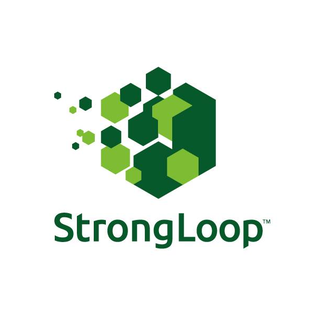
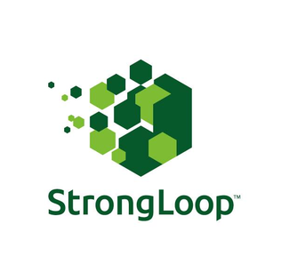

Why hydroponics?
Lagos, the capital of Nigeria, is home to 21 million people. In low-income areas such as the Apapa neighbourhood, people do not always have access to fresh produce and fruits, which are vital for a balanced diet. As a result, malnutritions is common among Lagos’ poorer citizens.
WeSprout is a low-tech hydroponics starter kit that empowers low-income households in Lagos to grow leafy greens and vegetables in their home.

Bird's eye-view of urban gardens in the Apapa neighbourhood in Lgaos, Nigeria.
 
